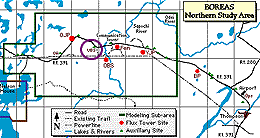
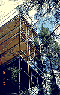
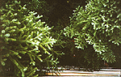
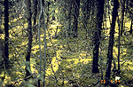

The Upland Black Spruce site contained a large Terrestrial Ecology (TE) canopy access tower that topped out in the canopy of black spruce trees. This allowed researchers to take samples from within the canopy, and to make measurements using the living trees themselves. This site is also referred to as "NSA-9BS-9TETR".
 Location of the NSA within Canada. |
 Location of the Upland Black Spruce site within the NSA. |
| NSA Upland Black Spruce Site also called NSA-9BS-9TETR (click here for detailed info) |
||
| Latitude: 55.90802 | UTM Easting: 530092 | BOREAS X: 775.369 |
| Longitude: -98.51865 | UTM Northing: 6195947 | BOREAS Y: 616.166 |
| Elevation (ASL): 239.51 m | UTM Zone: 14 | |
|  The NSA-UBS TE tower from below | |
|  The spruce canopy, looking down from the TE tower |  UBS ground cover (moss and loam floor) |
Related Pages:
 BOREAS Home
BOREAS Home
 Study Region Overview
Study Region Overview
 Northern Study Area (NSA)
Northern Study Area (NSA)
 NSA Upland Black Spruce Site (NSA-UBS)
NSA Upland Black Spruce Site (NSA-UBS)
Revison Date: January 25, 1999
{kind=link}
{kind=link}
{kind=link}